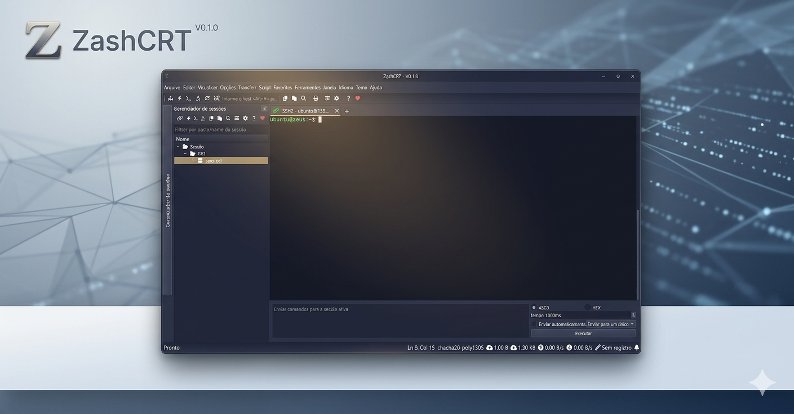
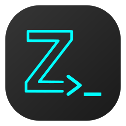

SSH2 com sessões organizadas
Crie, renomeie, copie, duplique e mova sessões entre grupos. Abra múltiplas conexões e mantenha o ambiente de trabalho limpo.
Terminal moderno para Windows
SSH, SFTP, Telnet, Serial e shell local em uma experiência pensada para quem administra servidores todos os dias. O ZashCRT nasceu para simplificar conexões, organizar sessões e entregar um fluxo confiável para ambientes com automação de logon, SecureCRT e Balabit.

Recursos
O ZashCRT reúne recursos essenciais em uma interface direta: conectar, organizar, automatizar e transferir arquivos sem depender de várias ferramentas abertas ao mesmo tempo.
Crie, renomeie, copie, duplique e mova sessões entre grupos. Abra múltiplas conexões e mantenha o ambiente de trabalho limpo.
Navegue no servidor remoto, faça upload e download, pesquise arquivos, atualize diretórios e acompanhe transferências com mais clareza.
Importe sessões, grupos, usuários, credenciais e scripts de automação de ambientes existentes. A migração fica mais rápida e menos propensa a erro manual.
Use ações sequenciais de esperado/enviar, scripts VBS ou Python e comandos remotos para automatizar fluxos repetitivos de acesso.
Force prompts de logon no terminal e use keyboard-interactive para ambientes que exigem gateway, auditoria e autenticação intermediária.
Além de SSH/SFTP, trabalhe com Telnet, portas seriais e shell local em uma única ferramenta para Windows.
Configure encaminhamento de portas para acessar serviços remotos com praticidade, usando endereços e portas locais/remotas.
Leve o ZashCRT para máquinas Windows de teste ou operação sem transformar a instalação em um projeto paralelo.
Atalhos, abas, gerenciamento de sessões e comandos para a sessão ativa ajudam a reduzir cliques e acelerar tarefas diárias.
Alternativa ao SecureCRT
O SecureCRT é uma referência consolidada no mercado. O ZashCRT entra como uma alternativa independente para equipes que querem manter produtividade, organizar sessões, automatizar logons e operar SFTP sem depender exclusivamente de ferramentas proprietárias.
A proposta não é copiar uma experiência existente, mas oferecer um caminho moderno, portátil e evolutivo para fluxos reais de infraestrutura, incluindo migração de sessões, scripts, túneis SSH e ambientes com Balabit.
Issues, ideias e solicitações
O desenvolvimento principal acontece em repositório privado, mas o ZashCRT possui um repositório público para receber bugs, dúvidas, pedidos de funcionalidades, melhorias de UX e solicitações relacionadas a sessões, SFTP, Balabit, túneis e automação de logon.
Esse canal ajuda a organizar a evolução do projeto, priorizar problemas reais e dar visibilidade ao que está sendo discutido, sem expor código-fonte, credenciais, ambientes internos ou informações sensíveis.
Download
A versão portable é ideal para validar o ZashCRT em uma máquina que já possui acesso aos servidores, sem precisar esperar um processo longo de instalação. Baixe, extraia e teste as sessões, SFTP, scripts e fluxos com Balabit.

Portable x64 - protótipo
Download em breve Quando o pacote estiver publicado, este botão apontará para o arquivo portable oficial.Guia rápido
Baixe o pacote portable e execute o ZashCRT em uma máquina Windows com acesso aos servidores.
Importe sessões existentes ou crie uma conexão rápida usando SSH2, Telnet, Serial ou shell local.
Para Balabit, habilite os prompts de logon no terminal, keyboard-interactive e configure o script de automação.
Apoie o projeto
O projeto está em desenvolvimento ativo. Qualquer contribuição ajuda a manter testes, melhorar a experiência, corrigir bugs e acelerar recursos importantes para quem trabalha com terminal todos os dias. Você pode apoiar com o valor que quiser ou puder via PIX ou Ko-fi.
Créditos e contato
ZashCRT é mantido por Leonardo Berbert, com foco em entregar uma alternativa prática para administração de servidores no Windows, incluindo SFTP, automação de logon, migração de sessões e fluxos com Balabit.
O projeto deriva do quardCRT, preservando os créditos do desenvolvedor original e da base GPL-3.0.